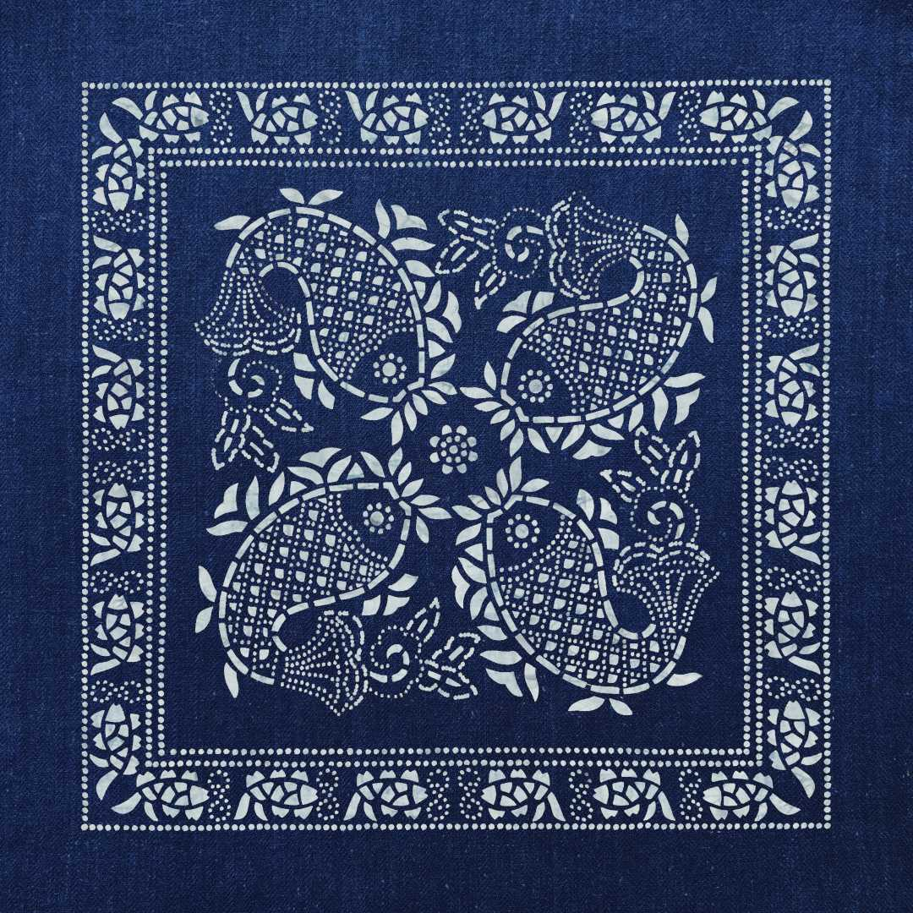

曹裕兴染坊宣传片

什
么是蓝印花布
蓝印花布是中国传统的手工印染工艺品，以蓝白两色相间为特征，又称靛蓝花布，俗称药斑布、浇花布，距今已有超过一千三百年的历史。
其历史可追溯至秦汉时期，最初以蓝草为染料，通过镂空版白浆防染印花工艺制成。唐宋时期逐渐兴盛，明清时期在江南地区（如南通 、桐乡等地）达到繁荣，并远销海外。
制作工艺采用全棉材质，经手工纺织、刻版、刮浆、染色等工序。染料以植物靛蓝为主，通过石灰、豆粉合成灰浆烤蓝，形成蓝白纹理。图案多以朴素典丽为特点，常见于日常衣物、被面、门帘等生活用品。
除“蓝印花布”外，还被称为药斑布（因使用石灰、豆粉混合物作为染料）、浇花布（因印染时需浇注染液于布面）。其色调清新，工艺简单且取材方便，深受民间喜爱。
蓝印花布的工艺流程
替板、刻板
首先刻一张纸板，第一张刻出的纸板不用而是当母版保留起来
依据纸板上的纹样，用自制的刻刀将纸板上的纹样刻出，形成镂空花纸板
上桐油、刮浆
为增加纸板使用寿命，刻完纸板后需反复打磨刻刀口并刷油
纸板置于白坯布上，用刀将黄豆粉与石灰粉调制防染浆刮在纸板上
染色、刮灰
一般经过6-8次反复如缸染色出缸透风氧化，使布料达到所需颜色
晒干后，用刀刮去放染剂，洗涤后蓝色部分愈蓝，白色花纹愈清晰
晾晒
晾晒架约7米高，此为人工挑布晾晒所能达到的极限
蓝印花布纹样种类大赏
-
几何纹样
-
中心纹样
-
花边纹样
-
植物纹样
-
动物纹样
-
单独纹样
-
角饰纹样